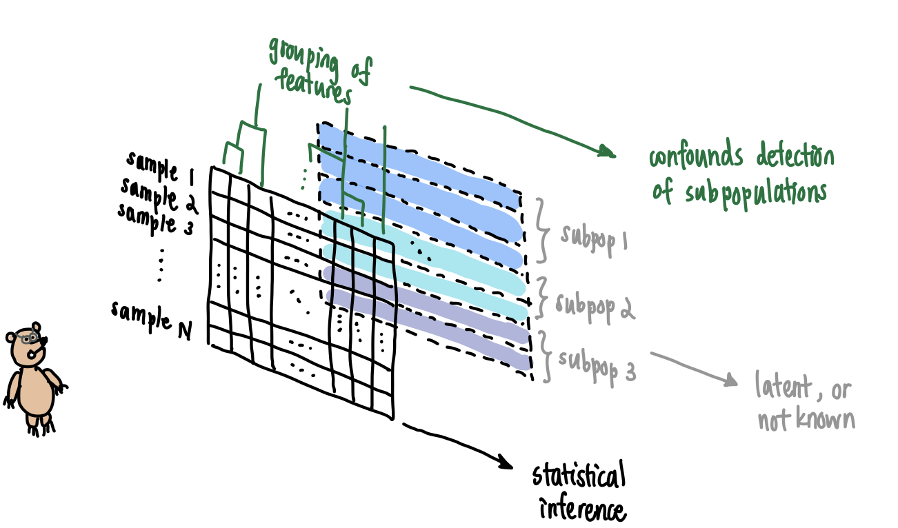

Bruno sees the array in front of him but does not see the latent information at the back.
Consider the following examples commonly encountered by practitioners.
- In population genetics, genetic samples are collected from individuals, say in a country like Mexico whose population history records admixture events and endogamous mating by cultural ancestry. It is not surprising if a dataset contains individuals that belong to distinguishable genetic communities. Unfortunately, absent information like family pedigrees, we might not have external means of grouping the individuals. This leads to less fine-scale analysis of the data and missed inferences about subpopulations.
- In single cell genomics, unique molecular identifiers (UMIs) are collected for a large sample of cells, and clustering algorithms are run to generate homogeneous groups of cells. External validation is used to guide correctness of clustering, and the resulting groups are assumed homogeneous for downstream analysis. However, the clustering algorithm does not provably recover homogeneous clusters without mathematical justification and underlying modeling assumptions made about the data. This has prompted the use of statistical hypothesis testing to validate post-clustering homogeneity.
- In survey questionnaires typical of the social sciences, the multivariate dataset \(\mathbf{X}\) conceals latent factors that can be recovered statistically. Concretely, it is assumed that the \(P\)-variate samples \(\mathbf{x}_1,\ldots,\mathbf{x}_N\) making up \(\mathbf{X}\) satisfy \[\mathbf{x}_i = \mathbf{\Lambda}\boldsymbol{\xi}_i + \boldsymbol{\delta}_i\] for each sample \(i\). Here \(\mathbf{\Lambda}\) is the \(P\times M\) matrix of loadings, \(\boldsymbol{\xi}_i\) is the \(M\)-dimensional sample-specific measurement at those \(M\) factors, and \(\boldsymbol{\delta}_i\) is a \(P\)-dimensional residual vector. After learning the latent factors from the dataset (i.e., \(\mathbf{\Lambda}\), and by extension \(\boldsymbol{\xi}_i\) and \(\boldsymbol{\delta}_i\) for each \(i\)), it is important to check that the residual vectors \(\mathbf{\Delta}=[\boldsymbol{\delta}_1,\ldots,\boldsymbol{\delta}_N]^T\) look independent and identically distributed, or at least exchangeable, so that no other latent factor was missed.
For each example above, methods have been developed to address the issue described. These methods vary in their degree of success. We won’t discuss the successes and limitations of such methods here. We merely want to suggest connections of our methods with some of these settings.
Instead, in this vignette we shall describe our general method of exchangeability and demonstrate its use on simulated data. Along the way, we will delight ourselves with a few morsels of data analysis, including double dipping and runs tests.
Basic Example
We start simple. This example is motivated by recent work of Lucy Gao and Daniela Witten, which they presented in the International Seminar on Selective Inference and in the R/Medicine 2020 Virtual Conference respectively.
We simulate \(\mathbf{X}\), a dataset consisting of \(N=100\) samples, where each sample consists of \(P=50\) independent features, each feature a realization of a standard Gaussian random variable. Mathematically, the entries \(x_{np}\overset{\text{iid}}{\sim} N(0,1)\).
## Generate some data
# Set seed for reproducibility
set.seed(420)
X <- matrix(rnorm(5000),
nrow = 100,
ncol = 50)Under such settings \(\mathbf{X}\) is homogeneous and the samples \(\mathbf{x}_1,\ldots,\mathbf{x}_N\) are exchangeable, but if we were handed \(\mathbf{X}\) without knowing its generative mechanism completely, we might want to perform clustering as part of exploratory data analysis.
## Cluster data
X_df <- as.data.frame(scale(X))
X_cluster <- kmeans(X_df, centers = 2, nstart = 25)
# Assign cluster labels
X_df$cluster <- X_cluster$cluster
# Perform PCA to visualize
X_pca <- princomp(X_df[,1:50])
PC1and2 <- X_pca$scores[,1:2] %>% as.data.frame()
PC1and2$cluster <- X_cluster$cluster By performing \(k\)-means clustering with \(k=2\) as shown above, we obtain a cluster assignment. We can visualize this clustering by performing PCA on the samples and plotting the projection of each sample onto its first two principal components.
## Visualize clustering
ggplot(PC1and2, aes(x = Comp.1, y = Comp.2)) +
geom_point(aes(colour = factor(cluster)),
shape = 10) +
theme_bw() +
xlab("PC1") +
ylab("PC2") +
guides(colour=guide_legend(title="Cluster")) +
ggtitle("A") +
theme(plot.title = element_text(face = "bold"))
plot of chunk 2_3
Next, we perform Wilcoxon rank sum tests between the two populations for each feature, applying Bonferroni correction to control the family-wise error rate (FWER) at \(\alpha=0.05\). Recall that the Wilcoxon rank sum (aka, Mann-Whitney) test is a non-parametric two-sample test for difference in sample distributions.
## Differential analysis
# Split into two clusters
X_df_1 <- X_df %>% filter(cluster == 1)
#> Error in filter(., cluster == 1): object 'cluster' not found
X_df_2 <- X_df %>% filter(cluster == 2)
#> Error in filter(., cluster == 2): object 'cluster' not found
# Compute p-values
p_val_vector <- c()
for (j in 1:50) {
# Perform differential analysis on feature j
da_result <- wilcox.test(x = X_df_1[,j],
y = X_df_2[,j])
# Print result if significant
p_val_vector <- c(p_val_vector, da_result$p.value)
if (da_result$p.value < 0.001) {
cat("The p-value for feature ", j, " is ", da_result$p.value, ".\n",
sep = "")
cat("This is significant at FWER = 0.05 after Bonferroni correction.\n")
}
}
#> Error in wilcox.test(x = X_df_1[, j], y = X_df_2[, j]): object 'X_df_1' not foundWe find six features that are statistically significant, which the user might erroneously report as discriminative features. We can visualize these six features by generating a Manhattan plot below.
## Visualize differential analysis
# Mutate the p-value vector for easier plotting
p_val_vector <- cbind(p_val_vector, 1:50) %>%
as.data.frame() %>%
`colnames<-`(c("p_value","feature")) %>%
select(feature, p_value) %>%
mutate(log_p_value = -log10(p_value),
is_sig = (-log10(p_value) > 3))
#> Error in names(x) <- value: 'names' attribute [2] must be the same length as the vector [1]
# Generate plot
ggplot(p_val_vector, aes(x = feature, y = log_p_value)) +
geom_point(aes(colour = is_sig)) +
theme_bw() +
ylab(expression(-log[10](p))) +
geom_hline(yintercept = 3, lty = "dashed") +
scale_color_manual(values=c("#404040", "#d7191c")) +
ggtitle("B") +
theme(plot.title = element_text(face = "bold"),
legend.position = "none")
#> Error in FUN(X[[i]], ...): object 'feature' not found
plot of chunk 2_5
Fixing the Problem
The process above, in which we first cluster the data and then perform differential analysis, is an example of double dipping.
What is Double Dipping?
Double dipping arises when insufficient care is taken in data analysis that involves multiple stages of computational work. While there are at least three well-documented instances of the phenomenon (Kriegeskorte et al., 2009), here we focus on a two-stage pipeline involving clustering and differential analysis. We dip into the data first by clustering, and then dip again by performing differential analysis on the post-clustering data. This is problematic because the clustering method inherently searches for discriminative features to determine clusters. Thus we should not dip twice, or “double dip.”Fortunately, we can avoid risking double dipping by performing our exchangeability test on the dataset \(\mathbf{X}\) as a first step.
## How to avoid risking double dipping
# Compute p-value for test of homogeneity
the_p_value <- getPValue(X)
cat("The p-value for the exchangeability test is ", the_p_value, ".\n", sep = "")
#> The p-value for the exchangeability test is 0.4782.
if (the_p_value > 0.05) {
cat("No evidence of heterogeneity at alpha = 0.05!\n")
}
#> No evidence of heterogeneity at alpha = 0.05!Note that alternative approaches, which we will not explore here, include selective inference (Gao et al., 2021+). For this alternative approach, in the differential analysis step one computes a \(p\)-value conditioned on the cluster membership obtained from the previous clustering step.
Dependent Features: Example from Population Genetics
The basic example, while illustrative of the problem and easily reproducible, is unlikely to occur in practice. Thus, we consider a more complicated example motivated by population genetics.
Tell me More about Population Genetic Data!
In population-genetic datasets, the features are binarized single nucleotide polymorphisms (SNPs). These features are thought to be generated by an underlying model of evolution, which includes both molecular processes (e.g., base pair mutation and genetic recombination) and demographic events (bottlenecks, migrations, etc.). Broadly speaking, a population geneticist takes a dataset \(\mathbf{X}\), whose samples \(\mathbf{x}_1,\ldots,\mathbf{x}_N\) are called haplotypes or genotypes depending on the ploidy of the organism, and fits a parametric model to it to estimate biologically or demographically meaningful parameters. Such parammeters include the per-site-per-generation mutation rate \(\mu\), the per-site-per-generation recombination rate \(\rho\), and the effective population size trajectory \(N_e(t)\), just to name a few.Here, we simulate \(\mathbf{X}\), a dataset consisting of \(N=100\) haploid individuals sampled from a panmictic population with per-site-per-generation parameters \(\mu=\rho=2\times 10^{-8}\). We generate polymorphisms by sampling \(10\) chromosomes independently. For each chromosome, we assume its length is set to \(1\times 10^{5}\). The effective population size is assumed constant \(N_e=10000\) throughout.
To simulate \(\mathbf{X}\), we use msprime. The simulation script is saved as msprime_model.py, and we call it using the reticulate library that interfaces R with Python.
Note that because of the way in which mutations are generated (they are assigned on top of a generated tree topology), the number of binary features contributed by each chromosome differs. We will treat each chromosome as an independent block later, so this remark is to remind us that our blocks will not typically be of the same size.
## Generate some data
# Source function to generate arrays with msprime
reticulate::source_python('msprime_model.py')
#> Error in py_run_file_impl(file, local, convert): ModuleNotFoundError: No module named 'msprime'
#>
#> Detailed traceback:
#> File "<string>", line 13, in <module>
#> File "/Library/Frameworks/R.framework/Versions/4.0/Resources/library/reticulate/python/rpytools/loader.py", line 44, in _import_hook
#> level=level
# Helper function to generate a haplotype array with names
getExHaplotypes <- function(N, num_blocks) {
# Build the matrix to be returned
data_set <- matrix(nrow = N,
ncol = 0)
# Build the column names to be added later
col_names <- c()
# Build the block delimiter vector to be returned
block_bounds <- c(1)
# Modify the matrix with simulated msprime data
for (b in 1:num_blocks) {
new_subarray <- getHaplotypes(N, 1e5)
if (b < num_blocks) {
block_bounds <- c(block_bounds,
block_bounds[length(block_bounds)]+dim(new_subarray)[2])
}
data_set <- cbind(data_set, new_subarray)
col_names <- c(col_names, paste0("rs", b, "_", 1:dim(new_subarray)[2]))
}
# Include column names for dataset
colnames(data_set) <- col_names
# Store output as a list
to_return <- list(data = data_set,
bounds = block_bounds)
return(to_return)
}
# Generate
set.seed(2021)
X_data <- getExHaplotypes(N = 100, num_blocks = 10)
#> Error in getHaplotypes(N, 1e+05): could not find function "getHaplotypes"
# View
X_data$data[1:6,1:6]
#> Error in eval(expr, envir, enclos): object 'X_data' not foundAs in the basic example, we cluster the samples into two clusters. Here, we use Prevosti’s distance (Prevosti et al., 1975), a popular measure of genetic distance, and perform hierarchical clustering with Ward linkage.
## Perform clustering
# Load library
library(poppr)
# Compute Prevosti's distance matrix
sample_dist <- provesti.dist(X_data$data)
#> Error in is(x, "gen"): object 'X_data' not found
# Perform hierarchical clustering
samples_hclust <- hclust(sample_dist, method = "ward.D")
#> Error in hclust(sample_dist, method = "ward.D"): object 'sample_dist' not found
# Obtain cluster labels
k = 2
samples_clusters <- cutree(samples_hclust, k) %>%
as.data.frame()
#> Error in h(simpleError(msg, call)): error in evaluating the argument 'x' in selecting a method for function 'as.data.frame': object 'samples_hclust' not found
samples_clusters$x <- seq(from = 1, to = dim(X_data$data)[1], by = 1)
#> Error in seq.default(from = 1, to = dim(X_data$data)[1], by = 1): object 'X_data' not found
# Attach cluster labels
X_df <- X_data$data %>%
as.data.frame() %>%
mutate(cluster = samples_clusters$.)
#> Error in h(simpleError(msg, call)): error in evaluating the argument 'x' in selecting a method for function 'as.data.frame': object 'X_data' not foundSimilar to Section 2, we can visualize our clusters by plotting the projection of the samples of \(\mathbf{X}\) onto their first two PCs. Here, because the number of features is larger than the number of samples, we use Q-PCA instead of R-PCA, and we subsequently obtain the projection scores by right-multiplying \(\mathbf{X}\) with the rotation matrix.
## Visualize clustering
# Perform PCA
X_pca <- prcomp(X_df[,1:(dim(X_df)[2]-1)], scale = TRUE)
X_score_matrix <- scale(X_df[,1:(dim(X_df)[2]-1)]) %*% X_pca$rotation
PC1and2 <- X_score_matrix[,1:2] %>% as.data.frame()
PC1and2$cluster <- X_df$cluster
# Generate plot
ggplot(PC1and2, aes(x = PC1, y = PC2)) +
geom_point(aes(colour = factor(cluster)),
shape = 10) +
theme_bw() +
xlab("PC1") +
ylab("PC2") +
guides(colour=guide_legend(title="Cluster")) +
ggtitle("C") +
theme(plot.title = element_text(face = "bold"))
plot of chunk 3_3
Next, we perform the Wald-Wolfowitz runs test for each feature, applying Bonferroni correction to control the family-wise error rate (FWER) at \(\alpha=0.05\).
What is the Wald-Wolfowitz runs test?
The runs test is a non-parametric test that counts the number of changes in a binary sequence (defined as either \(0\rightarrow 1\) or \(1\rightarrow 0\)) to decide if the sequence “looks random.” It is non-parametric because the null distribution, based on which the \(p\)-value is computed, fixes the number of ones in the sequence and performs permutations of the positions of ones. For example, suppose a length \(10\) binary sequence with \(4\) ones is observed. If that sequence were \(1001010010\), it’s probably random. If that sequence were \(1111000000\), probably not.Controlling FWER with the Bonferroni method amounts to a null rejection at threshold \(0.05/P\), where \(P\) is the number of polymorphic sites / features in \(\mathbf{X}\).
## Perform differential analysis
# Split into two clusters
X_df_1 <- X_df %>% filter(cluster == 1)
#> Error in filter(., cluster == 1): object 'cluster' not found
X_df_2 <- X_df %>% filter(cluster == 2)
#> Error in filter(., cluster == 2): object 'cluster' not found
num_feat <- dim(X_df_1)[2] - 1
#> Error in eval(expr, envir, enclos): object 'X_df_1' not found
# Compute p-values
p_val_vector <- c()
for (j in 1:num_feat) {
# Perform differential analysis on feature j
da_result <- tseries::runs.test(x = as.factor(c(X_df_1[,j],y = X_df_2[,j])))
# Print result if significant
p_val_vector <- c(p_val_vector, da_result$p.value)
}
#> Error in eval(expr, envir, enclos): object 'num_feat' not found
n_sig_vars <- sum(p_val_vector < 0.05 / num_feat)
#> Error in eval(expr, envir, enclos): object 'num_feat' not found
cat("The number of significant variants at FWER = 0.05 is ", n_sig_vars, ".", sep = "")
#> Error in cat("The number of significant variants at FWER = 0.05 is ", : object 'n_sig_vars' not foundWe find many features that are statistically significant. We can visualize them using a Manhattan plot, as usual.
## Visualize differential analysis
# Mutate the p-value vector for easier plotting
p_val_vector <- cbind(as.data.frame(p_val_vector), colnames(X_df[,1:num_feat])) %>%
`colnames<-`(c("p_value","feature")) %>%
select(feature, p_value) %>%
mutate(log_p_value = -log10(p_value),
is_sig = (-log10(p_value) > -log10(1.2e-05)))
#> Error in h(simpleError(msg, call)): error in evaluating the argument 'x' in selecting a method for function 'colnames<-': error in evaluating the argument 'x' in selecting a method for function 'colnames': object 'num_feat' not found
# Generate plot
ggplot(p_val_vector, aes(x = feature, y = log_p_value)) +
geom_point(aes(colour = is_sig), size = 0.5) +
ylab(expression(-log[10](p))) +
geom_hline(yintercept = -log10(0.05/num_feat), lty = "dashed") +
scale_color_manual(values=c("#404040", "#d7191c")) +
ggtitle("D") +
theme(plot.title = element_text(face = "bold"),
legend.position = "none",
axis.text.x = element_blank(),
axis.ticks.x = element_blank())
#> Error in new_data_frame(list(yintercept = yintercept)): object 'num_feat' not foundIn a population-genetic setting, these “significant features” would be candidate SNPs for ancestrally informative markers, which we know to be false given that the samples were really drawn from a single, panmictic population.
Failing to Consider Feature Dependencies
Like in the basic example, we apply our exchangeability test before performing clustering to avoid double dipping. However, for population-genetic datasets, we expect correlation between SNPs lying in the same chromosome (owing to genetic recombination). This feature-feature correlation induces correlational patterns between samples, which could falsely suggest the presence of heterogeneous communities. We can see this by running the independent features version of the test.
## Compute p-value under independent features null
getPValue(as.matrix(X_df[,1:(dim(X_df)[2]-1)]), largeP = TRUE)
#> [1] 0.4220238If we were naïve, we’d reject the null hypothesis and conclude incorrectly the presence of distinct subpopulations.
Accounting for Feature Dependencies
To apply our test correctly, we must account for feature-feature dependencies. In our case, our features are grouped into chromosome blocks, where within each chromosome the SNPs are correlated owing to genetic recombination.
## Compute p-value under independent blocks null
# Note: this takes about 2-3 minutes to run
getPValue(X_data$data,
block_boundaries = X_data$bounds)
#> Error in eval(assertion, env): object 'X_data' not foundNow, we obtain a \(p\)-value that is well above a typical cut-off threshold. Hence, we conclude correctly that at \(\alpha=0.05\) there is insufficient evidence that \(\mathbf{X}\) is heterogeneous.